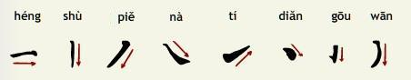
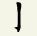
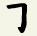

Strokes
Chinese is written using characters. Although there are several thousands of characters, knowing a couple of hundred characters will enable you to begin to read street and shop signs and simple texts. To read a newspaper articles or books requires about 3,500 characters. A well educated native speaker is likely to recognize 6,000+ characters.Although there are a number of different writing styles, we will concentrate in this introduction on the regular style, which is typical for most printed materials. Since the 1950s the People's Republic of China (PRC) has adopted a simplified version of the traditional characters. It is this version that is used throughout the Chinese Essentials.
Each Chinese character is made up of a fixed number of strokes. These strokes are written in a fixed order and each stroke is drawn in a particular direction. All characters fit into an imaginary square, irrespective of the size and number of strokes.
Chinese characters are made up of a number of strokes which are written in a imaginary square. Below are listed the eight basic strokes, which can either function as simple strokes by themselves or as part of more complex strokes.
| 横 | 竖 | 捺 | 撇 | 提 | 点 | 钩 | 弯 |  |
| Complex strokes are made up of simple strokes. The names of the simple strokes are normally added to name the complex stroke. |
For example: shùgōu |  |
| When several 横 and 竖 strokes are added, use the name of the first part of the stroke and then zhé for the subsequent parts. | For example: héngzhégōu |  |
(Note: There is some debate over the set of basic strokes and the naming of complex strokes)
Stroke Order
Chinese characters are made up of a fixed number of strokes written in a fixed order. Here are some straightforward guidelines to help with the order of strokes: